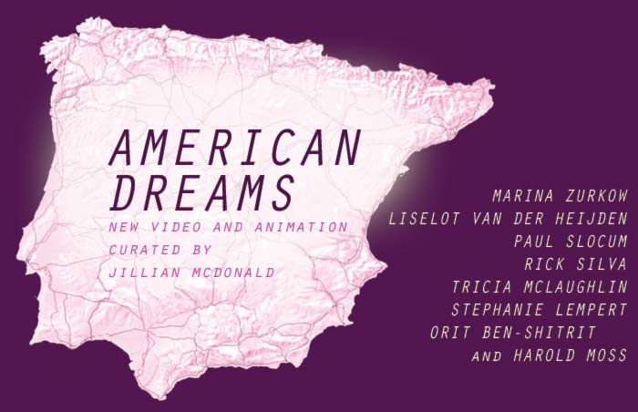
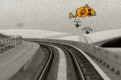
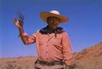
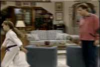
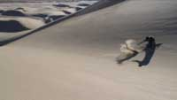
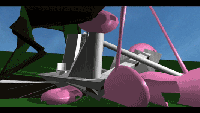
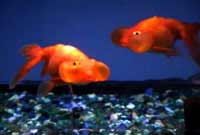
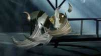

|
| |
|  | |
:::::::::March 5 - 28: exhibition, Pace Digital Gallery, New York :::::::::::
| |
| Natural Interpretation. Rick Silva's poetic intervention plugs the white dune, snow-crusted br /ook, and other quiet wonders into his scheme as hapless instruments in a sublime analogue remix. Stephanie Lempert translates the mouth movements of passive goldfish into English monosyllables. Relentless Remix. Orit Ben-Shitrit and Harold Moss's magazine imagery montage permits us a glimpse of their subterranean dreamworld populated by strange monsters. Liselot van der heijden finds innuendo and ridiculous machismo in one familiar posture from a Hollywood western. Paul Slocum's solicited recreations of a melodramatic scenario from sitcom television are fascinating in their subtle variations. Fantastic Mischief. Marina Zurkow's space invaders cavort unseen as they infiltrate New York City's gritty textural infrastructure. Tricia McLaughlin's "machine for living" posits an architecture that happily destroys and asexually reproduces itself in a satirical romp. ::::::::::::::::::::::::::::::::::::::::::::::::::::::::::::::::::::::::::::::::::::::::::::::::::::::::::::::: |
|
|  |
Marina Zurkow (Brooklyn, New York) - The Space Invaders This work is a composite of live action footage and 2D character animation that plays off vaudeville sketches, early cartoon pranks, and Grand Guignol's shock theater. USA's Homeland Security Advisory System, particularly Code Orange, is made manifest as a set of characters who gallivant beneath the radar in New York City. Rendered as fleshy, capricious agents, these particular "invaders" personify the nostalgic arcade game of aliens who fall from the sky. The video's amoral crack-dwellers, hobs and giants who translucently roam the streets come from inside, and not by spaceship or by airplane. Media artist and animator Marina Zurkow works with character and narrative in cartoons, installation, performance, and pop objects. She has exhibited and screened internationally, including Bryce Wolkowitz Gallery, Sundance Film Festival, Ars Electronica, FACT, Creative Time, and the Walker Art Center. Zurkow teaches at NYU's Interactive Telecommunications Program, and lives in Brooklyn, New York. |
|  |
Liselot van der Heijden (Queens, New York) - You Show Me Yours and I'll Show You Mine Liselot van der Heijden was born in Haarlem, the Netherlands and lives and works in New York City. Liselot van der Heijden produces installations, videos, objects and photographs. Recurring themes in van der Heijden's works are control and power of the gaze and 'Nature' as a cultural/political idea and anthropomorphic projection. She has exhibited at various institutions throughout the US and Europe. Venues include Smart Project Space in Amsterdam, Centre de Cultura Contemporania de Barcelona and the New Museum, the Queens Museum, the Brooklyn Museum, Lincoln Center in New York City. Liselot van der Heijden is represented by LMAK Projects in NYC. |
|  |
Paul Slocum (Dallas, Texas) - You're Not My Father Paul Slocum is a musician and new media artist. Computers and computer culture are often the medium and subject of his work. He is also half of Tree Wave, a band that makes music and video using obsolete computer and videogame gear programmed in assembly language, and he is director of And/Or Gallery, an art space in Dallas that specializes in new media work. Paul's performances and exhibitions include Transitio MX (Mexico City), The New Museum of Contemporary Art (NY), Deitch Projects (NY), Eyebeam (NY), VertexList(NY), The Liverpool Biennial. |
|  |
Rick Silva (Athens, Georgia) - A Rough Mix Rick Silva is an innovative emerging artist whose work has been exhibited and screened in 5 continents including The Whitney Museum of American Art, Transmediale, and Sonar. He has performed his live video work in Tokyo, London, and Houston's Software Cinema Festival. His work often deals with the mix, those in-between moments where nature becomes culture, metaphor becomes documentary and time turns into rhythm. |
|  |
Tricia McLaughlin (New York, New York) - Villa Savoye Tricia McLaughlin is the recipient of a Guggenheim Fellowship for her work in 3D design, animation and sculpture. She has also been awarded two grants from the Jerome Foundation (Travel Grant, 2006 and Media Arts Grant, 2004) and an Artist's Fellowship for Video from New York Foundation for the Arts. In 2006 she completed a 9 by 90 foot animation of a virtual aquarium for a permanent public art commission at the City of Virginia Beach Conference Center. Her work has been exhibited in the US, Canada, England, Germany, Spain, Russia, Chile and Japan. |
|  |
Stephanie Lempert (New York, New York) - Read My Lips Stephanie Lempert was born in Dallas, Texas and received her BFA from the Rhode Island School of Design. Her work concentrates on analyzing various systems of communication and exists in a wide variety of media including sculpture, photography and video. Her work has been exhibited and collected domestically and internationally at establishments such as A.I.R. Gallery, Socrates Sculpture Park, The Armory Show, Art Basel Miami Loop Art Fair, Lmak Projects, Stella Art Gallery, The Moscow World Fine Art Fair, and The 2006 New York Video Festival. Lempert is represented by the Claire Oliver Gallery in New York. |
|  |
Orit Ben-Shitrit and Harold Moss (New York, New York) - The Long from Inside Orit was born and raised in Israel. She left for New York after a mandatory army service in search for the meaning of life. After a quick search, she decided there is no meaning and became an artist. Tiro is her Moroccan doppelganger demon and the star of some of her projects. She has been creating collages and experimenting with gestalt laws of similarity and closure. Orit recently participated in exhibitions at Reed Whipple Gallery in Las Vegas; and White Box, Roebling Hall, Foxy Production -all in NY. She won a NYFA Fiscal Sponsorship and Young Painters Competition in Miami U. Harold is founder/creative director of FlickerLab (New York, NY), a multimedia animation and design studio for film, television, commercials, and the Web. Notably, Moss was animation director for the three-minute cartoon, A Brief History of the USA, in Michael Moore's Academy Award winning, Bowling for Columbine. He has created a wide range of animated work across all mediums, including co-creating, writing, and directing the animated web series This Modern World by Tom Tomorrow, and is currently developing a surprisingly bloody animated sitcom with a major cable network. |